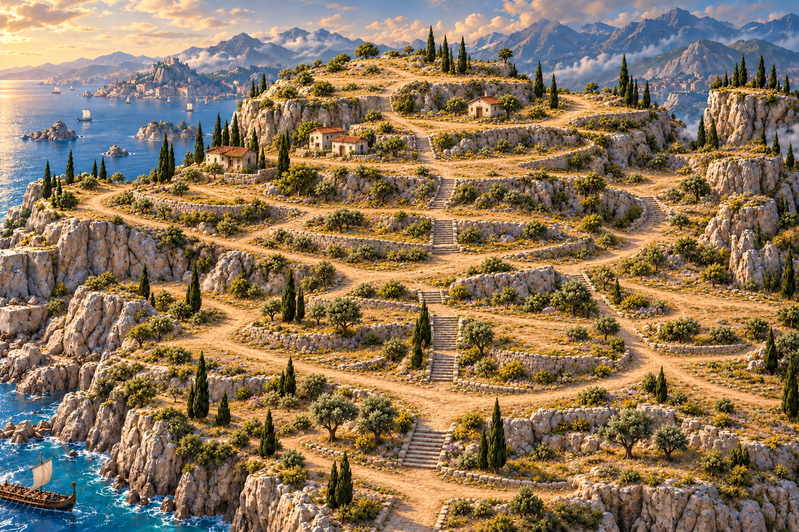
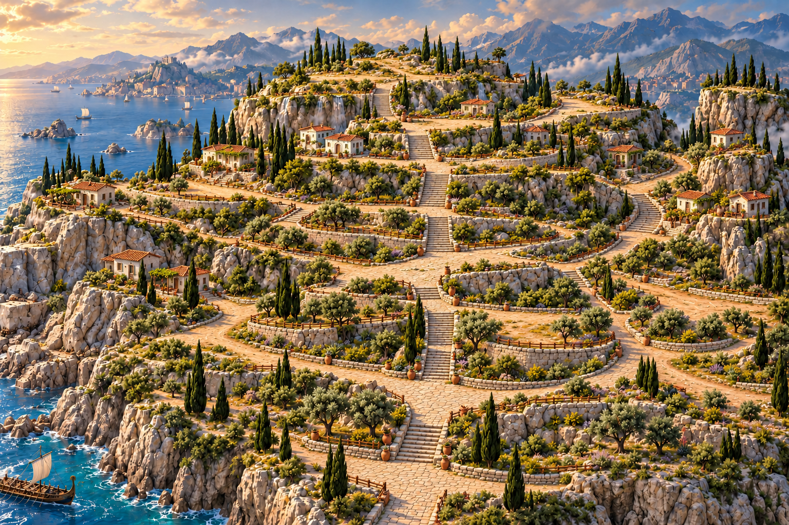
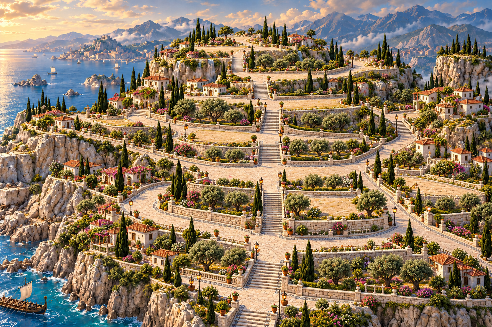
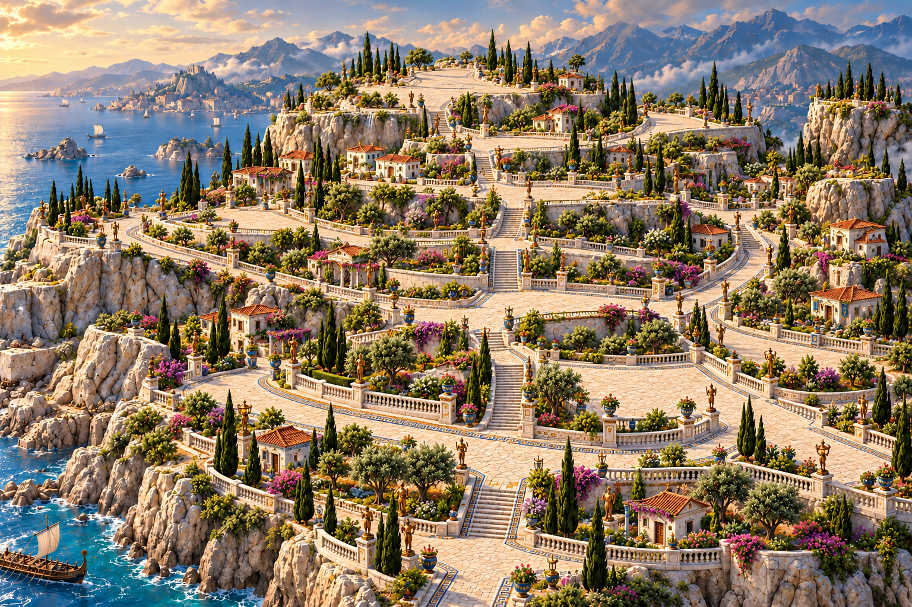

1 · Village

Earthen tracks, rough terraces and modest housing. Test save
2 · Town

Paved main routes and established infrastructure. Test save
3 · City

Limestone streets, ordered gardens and prosperous neighborhoods. Test save
4 · Capital

Marble, mosaics, ornamental terraces and lush landscaping. Test save